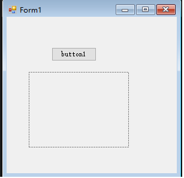

关于winform上传图片到Java后端，保存到数据库，有多种方法，本文主要介绍利用picturebox控件，点击按钮上传图片，将图片转化为base64格式,以json格式上传到Java后台，再从java端解析，保存到数据库。
上代码:
首先，画面上添加一个picturebox控件，再添加一个button，给button设置click事件-获取到base64格式的字符串。

/// <summary>
/// 图片上传
/// </summary>
/// <param name="sender"></param>
/// <param name="e"></param>
private void btnUploadImage_Click(object sender, EventArgs e)
{
OpenFileDialog openFileDialog = new OpenFileDialog();
if (openFileDialog.ShowDialog() == DialogResult.OK)
{
//PictureBox控件显示图片
picExpPic.Load(openFileDialog.FileName);
//获取用户选择文件的后缀名
string extension = Path.GetExtension(openFileDialog.FileName);
//声明允许的后缀名
string[] str = new string[] { ".gif", ".jpeg", ".jpg", ".png", ".bmp" };
if (!str.Contains(extension))
{
MessageBox.Show("仅能上传gif,jpge,jpg,png,bmp格式的图片！");
}
else
{
Image img = this.picExpPic.Image;
MemoryStream ms = new MemoryStream();
img.Save(ms, img.RawFormat);
byte[] bytes = ms.ToArray();
ms.Close();
string strbaser64 = Convert.ToBase64String(bytes);
imgStr = "data:image/jpg;base64," + strbaser64;
}
}
}把字符串imgStr拼接成json格式，上传。c#链接Java后台代码，后续给出。
java后台接收json:
/**
* 新增信息
* @return
*/
@RequestMapping(value="/addInfo")
@ResponseBody
public Result addInfo(String strJson,HttpServletRequest request){
JSONObject object = new JSONObject(strJson);
String base64 = object.getString("Expertpic");
//转为file格式---获取图片信息
MultipartFile fileExpPic = base64ToMultipart(base64);
Result result = new Result();
int ret = 0;
//格式化字符串
String base = base64.replace(" ", "+");
//去掉头部
String[] baseStrs = base.split(",");
BASE64Decoder decoder = new sun.misc.BASE64Decoder();
byte[] bytes1;
String filePath2 = null;
String fileName2 = null;
try {
filePath2 = request.getServletContext().getRealPath("resources\\\\uploads")+"\\";
fileName2 = "expertpic"+sdf.format(dt)+"."+(fileExpPic).getOriginalFilename().substring((fileExpPic).getOriginalFilename().lastIndexOf(".")+1);
//转化为文件流
bytes1 = decoder.decodeBuffer(baseStrs[1]);
//生成jpeg图片
String imgFilePath = filePath2+fileName2;//新生成的图片
OutputStream out = new FileOutputStream(imgFilePath);
out.write(bytes1);
out.flush();
out.close();
} catch (IOException e1) {
// TODO Auto-generated catch block
e1.printStackTrace();
}
File dir = new File(filePath2);
if(!dir.exists()) {
dir.mkdirs();
}
try {
A a=new A();
a.temp="";
ret =this.addService.addInfo(a);
if(ret==0) {
result.setSuccess(false);
result.setErrMsg("失败！");
}else {
result.setSuccess(true);
}
} catch (Exception e) {
result.setSuccess(false);
result.setErrMsg("失败！");
}
return result;
}java base64转化为File方法：
public static MultipartFile base64ToMultipart(String base64) {
try {
String base = base64.replace(" ", "+");
String[] baseStrs = base.split(",");
BASE64Decoder decoder = new sun.misc.BASE64Decoder();
byte[] bytes1 = decoder.decodeBuffer(baseStrs[1]);
return new BASE64DecodedMultipartFile(bytes1, baseStrs[0]);
} catch (IOException e) {
e.printStackTrace();
return null;
}
}保存到数据的是自己拼的图片名称和图片后缀，图片的存储位置在自己指定的项目目录。
至此c#上传图片告一段落